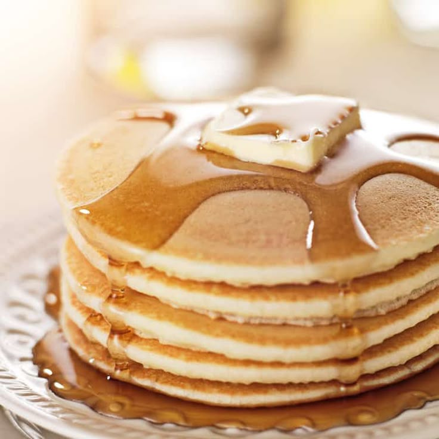

Pancake's Recipe

Description
A pancake, also known as a hotcake, griddlecake, or flapjack, is a flat type of batter bread like cake, often thin and round, prepared from a starch-based batter that may contain eggs, milk, and butter, and then cooked on a hot surface such as a griddle or frying pan. Archaeological evidence suggests that pancakes were probably eaten in prehistoric societies.
Ingredients
- Flour
- Sugar
- Leaveners
- Salt
- Buttermilk
- Milk
- Eggs
- Butter
Steps
- Mix the dry ingredients: Combine flour, sugar, baking powder, baking soda, and salt in a large bowl.
- Mix the wet ingredients: Beat the buttermilk, milk, eggs, and melted butter together in a separate bowl. Do not combine the wet and dry ingredients until right before you cook the pancakes.
- Make the pancakes: Add the wet ingredients to the dry ingredients and mix with a wooden spoon or fork until the mixtures are just-blended. Scoop the batter onto a hot, oiled griddle and cook until the pancake is bubbly on the top. Flip with a spatula and cook until both sides are brown.
Home